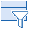
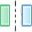
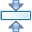

Toolbars and views
Toolbars
The Kactus2 main window contains a toolbar at the top and sidebars on both sides. The toolbar contains actions for
performing common actions within the Kactus2.
The toolbar adapts to the size of the window. If the window gets too small for the
toolbar, two buttons for scrolling left and right will be made visible.
Scrolling can also be done by using the mouse wheel.
The toolbar hides actions that are not available in the current environment. For example,
generators are not show when no component or design has been selected.
UI views can be docked to a sidebar. Multiple views can be docked
to the same sidebar and the active view can be hidden by clicking its icon in the sidebar, or changed
by clicking the icon of another view.
The toolbar groups
The File group contains functions for controlling the files of the component.
-

New. Creates a new component, design, system,
bus, COM definition or API definition.
-

Save. Saves the active document with its
current name and location. Activates when a document has been edited.
-

Save As. Saves the document with a new name
and location.
-

Save all. Saves all open documents.
-

Print. Prints the currently open design.
-
Export image. Export an image of the currently open
design document. Possible image formats are SVG, JPG and PNG.
-

Import File to Component. Imports elements from a
source file e.g. VHDL or verilog to the active component.
The Library group contains functions for maintaining the IP-XACT libraries used by the Kactus2.
-

Configure libraries. Select the
libraries used in Kactus2. The libraries can be set as default and active.
-

Refresh libraries. Refresh the currently
active libraries.
-

View Library Integrity Report. Shows
a report of errors within all library items. This operation may take a long time with
large libraries.
The Protection group shows the current documents editability. The lock status can be changed with
this button.
-

Locked. While locked, no changes can be
made to the document.
-

Unlocked. While unlocked, the documents
can be edited and saved.
The Generation group shows all the available generator plugins underneath Run generator:
-
Run generator
Runs a chosen generator for the active component. If the active document is a design, all component
instances are included in documentation generation.
The Diagram Tools group consist of tools related to the design editors of Kactus2. This group is only
visible to the HW, SW and system design editors.
-

Add Column. Creates a new column to the design. In HW design, the type of the possible
items in the new column can be customized.
-

Select Tool. Allows the selection of items within the HW design. Information regarding the
selected item is show on the different editors of the des.
-

Interconnection Tool. Allows the creation of interconnections between the interfaces of
component instances. After selecting the starting point, the possible ending points for the
connection are highlighted in the design. An interconnection cannot be dragged from the starting
point to the ending point. Both points must be selected separately.
-

Interface Tool. Draft interfaces can be to the component containing the currently opening
design. These interfaces must be placed within columns allowing interface items.
-

Drafting Tool. Allows the creation of draft component instances and interfaces. The drafted
component instances must be placed in columns allowing component instances. Interfaces can be
placed either into the component containing the design, or any of the drafted component instances.
-

Toggle Off-Page Tool. Changes the selected connections from regular to off-page, and from
off-page to regular. Off-page connections are displayed as squares near an interface, and the
connected point is displayed when an off-page point is selected.
-

Sticky Note Tool. Create notes regarding the currently open design. Notes can be associated
with an item contained within the design. This can be achieved through the button located at the
top right corner of the note.
The Filtering Tools group has actions for filtering and adjusting the visualization of the memory
layout for current component hierarchy. Available only in the Memory Designer.
-
Filter Segments. Show/hide the segments within the address spaces.
-

Filter Address Blocks. Show/hide the address blocks within the memory maps.
-

Filter Registers. Show/hide the registers within the address blocks.
-
Filter Fields. Show/hide the bit fields within the registers.
-

Address Space Filter. Show/hide the address space items on the path
from the furthest address space to the connected memory maps.
-
Unconnected items filter Show/hide unconnected memory items.
-

Compress Memory Items. Minimize the vertical space taken by the
memory items. When disabled, the item height is relative to the contained address range.
-
Compress Field Items. Minimize the horizontal space taken by the bit field items.
-
Extend Field Items. Extend the horizontal space taken by the bit field items.
This ensures the full name is visible for every item.
The View group has actions for defining the view of the current design. Visible Windows -button
is always available.
-

Zoom In. Enlarge the display of the active
design.
-

Zoom Out. Reduce the display of the active
design.
-

Original 1:1 Zoom. Return the display
to original size.
-

Fit Document to View. Fit the currently
active document to the available view.
-

Visible Windows. Allows changing the
visibilities of the available windows.
-

Visibilities. Change the visibilities of
design items.
The Configuration group contains actions related to configuring the currently open document.
-
View Configuration. Configure the views used
in the currently open document. The items are constructed recursively, so that the contained items
within a component with a hierarchical view are displayed below said item. This allows the display
of all the items contained within the currently active document.
-

Open Memory Designer. Opens a view of the memory
layout of the underlying component hierarchy. Available only in Hardware Design view.
The Workspace group shows the currently selected workspace.
-

Workspace. Select, delete or create other
workspaces. Only non-active, non-default workspaces can be deleted.
The System group contains actions related to the whole system.
-

Settings. Displays the available settings
for Kactus2.
-

Help. Opens the Kactus2 manual.
-

About. Shows information about Kactus2.
-

Exit. Exit Kactus2.
Views
Views are used to present additional data regarding the currently open document.
Common
Views that can be displayed regardless of the currently open document:
-
Context Help displays help of the currently open document or editor.
-
IP-XACT Library shows the used libraries of Kactus2. See
library navigation.
-
Output displays data of the actions performed by Kactus2.
Vendor Extensions
Vendor Extensions are used to edit the user defined extensions. Depending on the currently
active editor, either the extensions of the current document or the active element are displayed.
Design
Views that are related to design documents, both HW and system.
-
Connection Editor displays data of the currently active interconnection. See
interconnection,
ad-hoc connection,
api connection or
com connection.
-
Component Instance Details displays details of the active component instance. See
component instance,
HW mapping instance,
SW component instance.
-
Design Configuration Details allows the editing of the design details. The current
design configuration can be changed, and the view configuration allows the
editing of the active views for the contained component instances.
-
Interface Editor displays data related to the currently active interface:
-
Bus interface contains data of the bus type, abstraction type, the
interface mode and the contained port maps.
-
API interface displays the API type of the interface and its
dependency direction.
-
COM interface details the COM type, transfer type and
direction of the interface, as well as allowing editing of its property values.
HW design
Views for displaying details only related to a HW design.
-
Ad hoc port editor allows the editing of ad hoc ports. The port names and directions are displayed, and
port visibility can be enabled or disabled.
-
Design parameters displays the parameters of the parameters associated with the current
design. See parameters.
System design
Views for displaying details related only to a system design.
-
HW Mapping Details allows the editing of the referenced HW component and selecting the
referenced active view. Additional functions for handling the SW are also provided.